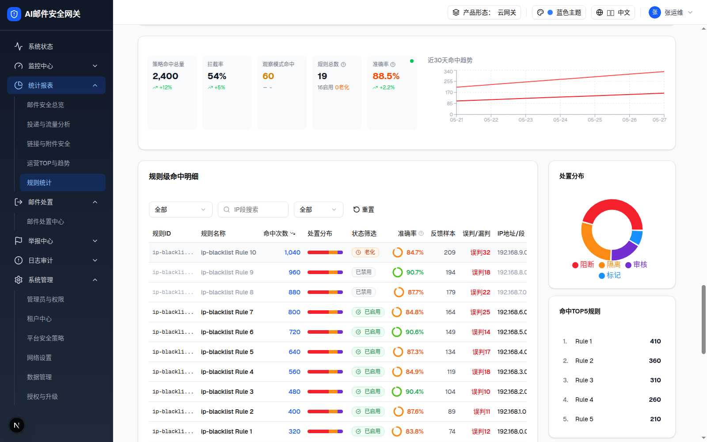
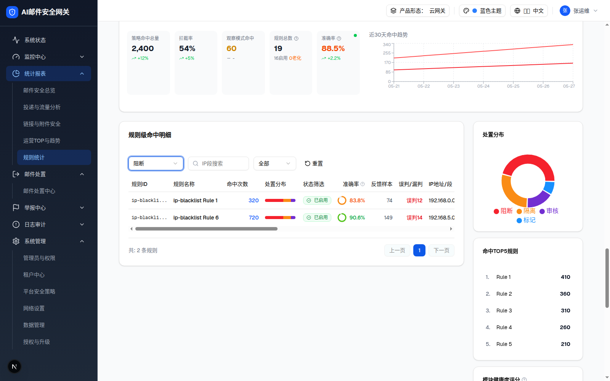
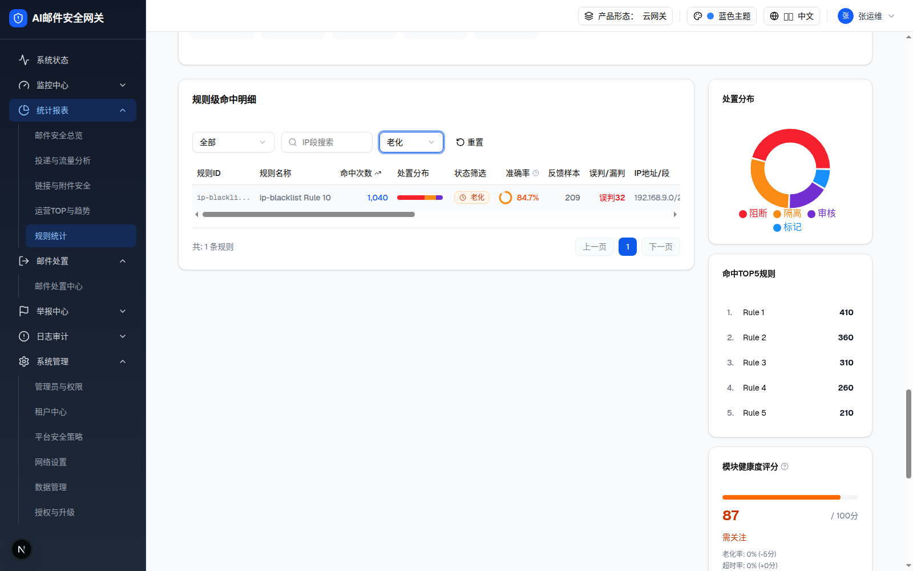
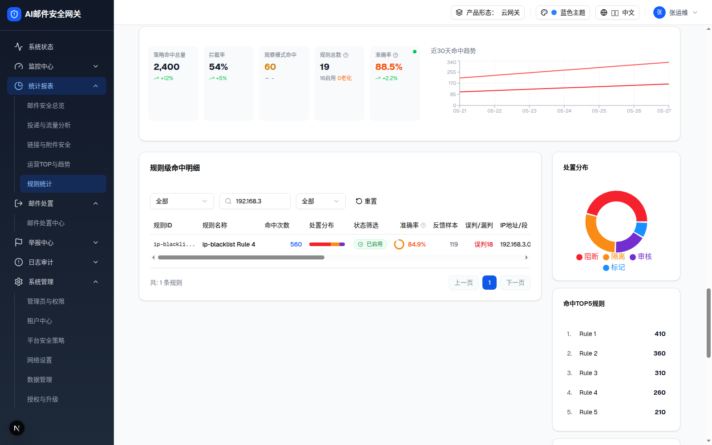

| 所属组件 | 2.6 → 层级2 明细视图内「规则级命中明细」卡 |
| 主文件 | statistics-rule-stats-v2/index.html |
| 触发路径 | 层级2 明细视图 → 操作表格上方筛选行 / 表头 / 底部分页 |
| 状态 | filters / searchText / sortField / sortOrder / currentPage（pageSize 固定 10） |
192.168.3 → 1 行；④ 点「命中次数」表头切换降序/升序；⑤ 「重置」恢复。底部「共: N 条规则」随筛选联动。注意「操作类型」列如实显示 demo 的原始 key 缺陷（§9-D3）。| 规则ID | 规则名称 | 命中次数 | 处置分布 | 状态筛选 | 准确率 | 反馈样本 | 误判/漏判 | IP地址/段 | 操作类型 | 阻断次数 | 隔离次数 | 丢弃次数 | 审核次数 | 最后命中时间 | 修改时间 | 操作 |
|---|---|---|---|---|---|---|---|---|---|---|---|---|---|---|---|---|
| ip-blackli... | ip-blacklist Rule 1 | 已启用 | 83.8% | 74 | 误判12 | 192.168.0.0/24 | ruleStatsV2.detail.block | 186 | 21 | 23 | 33 | 2026-05-27 14:30 | 2026-05-20 10:00 | |||
| ip-blackli... | ip-blacklist Rule 2 | 已启用 | 87.6% | 89 | 误判11 | 192.168.1.0/24 | ruleStatsV2.detail.isolate | 186 | 104 | 69 | 18 | 2026-05-26 13:30 | 2026-05-19 10:00 | |||
| ip-blackli... | ip-blacklist Rule 3 | 已启用 | 90.4% | 104 | 误判10 | 192.168.2.0/24 | ruleStatsV2.detail.discard | 365 | 197 | 17 | 30 | 2026-05-25 12:30 | 2026-05-18 10:00 | |||
| ip-blackli... | ip-blacklist Rule 4 | 已启用 | 84.9% | 119 | 误判18 | 192.168.3.0/24 | ruleStatsV2.detail.audit | 77 | 177 | 21 | 44 | 2026-05-24 11:30 | 2026-05-17 10:00 | |||
| ip-blackli... | ip-blacklist Rule 5 | 已启用 | 87.3% | 134 | 误判17 | 192.168.4.0/24 | ruleStatsV2.detail.disabled | 189 | 86 | 94 | 4 | 2026-05-23 10:30 | 2026-05-16 10:00 | |||
| ip-blackli... | ip-blacklist Rule 6 | 已启用 | 90.6% | 149 | 误判14 | 192.168.5.0/24 | ruleStatsV2.detail.block | 224 | 190 | 1 | 8 | 2026-05-22 9:30 | 2026-05-15 10:00 | |||
| ip-blackli... | ip-blacklist Rule 7 | 已启用 | 84.8% | 164 | 误判25 | 192.168.6.0/24 | ruleStatsV2.detail.isolate | 147 | 127 | 80 | 36 | 2026-05-21 8:30 | 2026-05-14 10:00 | |||
| ip-blackli... | ip-blacklist Rule 8 | 已禁用 | 87.7% | 179 | 误判22 | 192.168.7.0/24 | ruleStatsV2.detail.discard | 208 | 167 | 26 | 20 | 2026-05-20 7:30 | 2026-05-13 10:00 | |||
| ip-blackli... | ip-blacklist Rule 9 | 已禁用 | 90.7% | 194 | 误判18 | 192.168.8.0/24 | ruleStatsV2.detail.audit | 246 | 167 | 16 | 35 | - | 2026-05-12 10:00 | |||
| ip-blackli... | ip-blacklist Rule 10 | 老化 | 84.7% | 209 | 误判32 | 192.168.9.0/24 | ruleStatsV2.detail.disabled | 179 | 97 | 16 | 7 | - | 2026-05-11 10:00 |




| 列 | 渲染规则 |
|---|---|
| 规则ID | font-mono，截断前 10 字符 + … |
| 规则名称 | font-medium truncate max-w-160px；hover Tooltip 显示全名 |
| 命中次数 | 蓝色链接钮 + 千分位；hover Tooltip「点击查看命中该规则的具体邮件列表」；点击无实现（§10-Q8）；表头可排序（唯一排序列） |
| 处置分布 | 行内 mini 进度条 h-2 w-20，硬编码 60/25/15（§9-D8） |
| 状态筛选（列头即此名） | 徽标：已启用绿 / 已禁用灰（整行文字变淡）/ 老化规则橙（行底灰） |
| 准确率 ❔ | 24px SVG 环形进度 + 百分比：≥90 绿 / ≥70 橙 / <70 红 / null 灰「-」；hover Tooltip「准确率{rate}%，基于{samples}条反馈（正确{correct}条 / 误判{false}条）」 |
| 反馈样本 | <30 时橙色 + AlertTriangle 警示图标（mock 中最小 74，未触发） |
| 误判/漏判 | 「误判N」红色（N>0）；白名单类规则前缀「漏判」 |
| 操作（尾列） | 「查看」ghost 钮 + ExternalLink 图标钮，均无绑定行为 |
| 列 | 宽 | 对齐 | 类型/渲染 |
|---|---|---|---|
| IP地址/段 | 160px | 左 | text（192.168.N.0/24） |
| 操作类型 | 100px | 左 | badge——实际渲染原始 key：ruleStatsV2.detail.block/isolate/discard/audit/disabled（§9-D3）；badge variant：block=destructive红 isolate=default蓝 其余 outline |
| 阻断次数 / 隔离次数 / 丢弃次数 / 审核次数 | 90px×4 | 右 | number（Math.random mock，每次渲染不同） |
| 最后命中时间 | 160px | 左 | time（无值显示 -） |
| 修改时间 | 160px | 左 | time |
| 元素 | 规格 |
|---|---|
| 模块专属筛选 | ip-blacklist：操作类型 Select(w-36：全部/阻断/隔离/丢弃/审核/不启用) + IP段搜索 Input(w-40，Search 图标)。各模块筛选组见层级4 |
| 状态筛选 Select(w-28) | 全部 / 已启用 / 已禁用 / 老化规则（所有模块共有，追加在专属筛选后） |
| 重置 Button(ghost) | 清空 filters + searchText + 排序 + 回第 1 页 |
| 分页 | 左「共: N 条规则」；右 上一页 / 页码钮(最多5个，当前页实心) / 下一页；首末页禁用相应按钮。mock 恰好 10 条 = 1 页，两钮恒禁用（§9-D13） |
| 比对项 | demo 实际 DOM | 提取的 HTML / 预览 | 是否一致 |
|---|---|---|---|
| 表头（17 列） | 规则ID · 规则名称 · 命中次数 · 处置分布 · 状态筛选 · 准确率 · 反馈样本 · 误判/漏判 · IP地址/段 · 操作类型 · 阻断次数 · 隔离次数 · 丢弃次数 · 审核次数 · 最后命中时间 · 修改时间 · 操作 | 同左（提取自浏览器 th 列表） | ✅ |
| 数据行数 / 节点总数 | 10 行 / 表格卡 483 节点 | 同左 | ✅ |
| 排序行为 | 降序 [1040,960,…,320] → 升序 [320,…,1040]（实测） | 预览复刻一致 | ✅ |
| 操作类型=阻断 | 2 行（Rule 1 / Rule 6），共: 2 条规则 | 预览复刻一致 | ✅ |
| 状态=老化规则 | 1 行（Rule 10） | 预览复刻一致 | ✅ |
| 搜索 192.168.3 | 1 行（Rule 4） | 预览复刻一致 | ✅ |
| badge 单元格文本 | 原始 key（ruleStatsV2.detail.block 等 5 种全部原样） | 如实保留（缺陷 §9-D3） | ✅ |